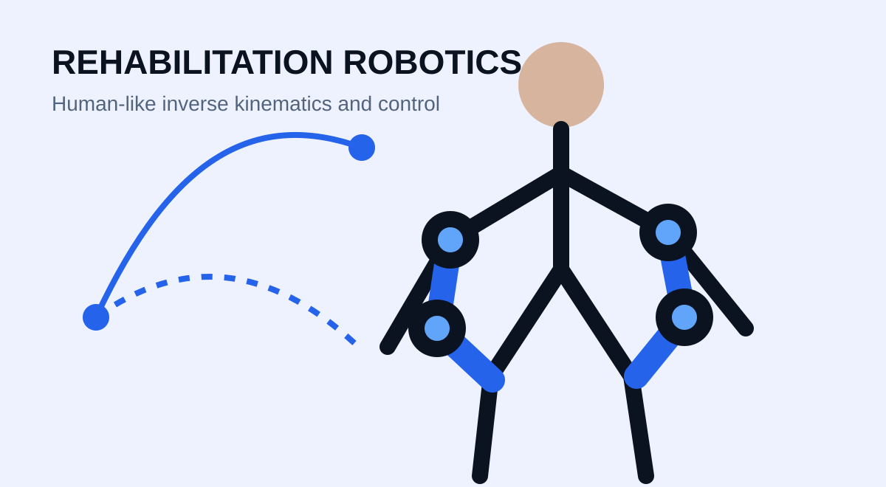
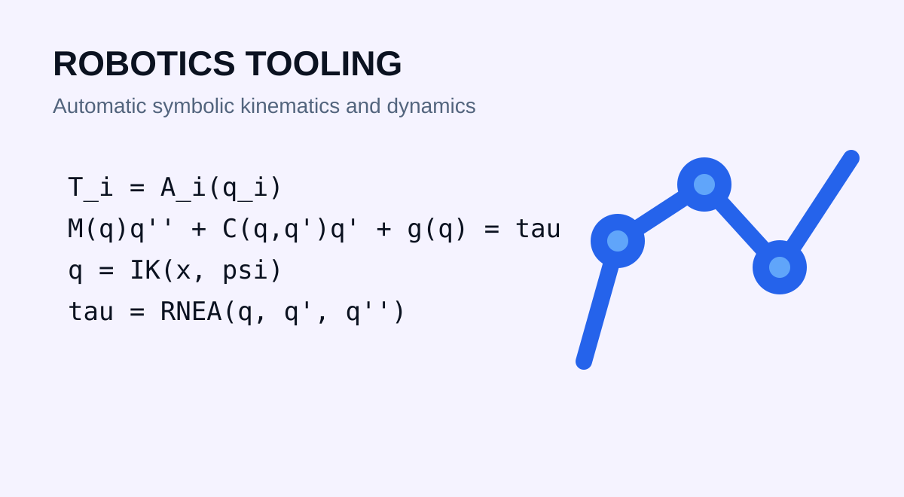
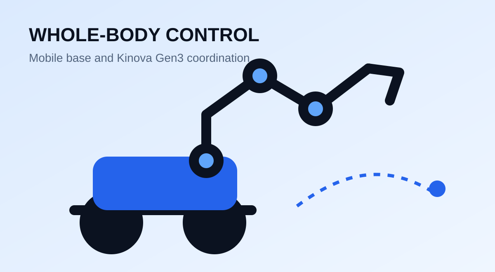

Robotics Software Engineer | Montréal, QC, Canada
David Bedolla, PhD
Real-Time Robotics Software | Motion & Control | Hardware Deployment
I build and deploy robotics software that turns kinematic and dynamic models into reliable motion on physical systems. My work combines C++, ROS 2, LabVIEW, model-based control, redundancy resolution, hardware integration, and measurable real-time performance.

Robotics Software Engineer
 Lab INIT Robots
Lab INIT Robots
About
Turning robot models into fast, testable software for real hardware.
I am a robotics software engineer with applied R&D experience across the full path from mathematical modeling to deployment on real hardware. I design kinematics and dynamics algorithms, deterministic motion and control software, hardware interfaces, and validation workflows using C++, ROS 2, LabVIEW RT and FPGA, MATLAB and Simulink, and Python.
At Lab INIT Robots, I develop whole-body motion, Cartesian control, redundancy resolution, and safety-oriented command systems for a Kinova Gen3 mobile manipulator. My academic background adds depth in learning-based rehabilitation robotics, while my engineering focus stays on runtime performance, integration, testing, and dependable behavior on physical systems.
Robotics portfolio
Research and engineering work

Rehabilitation robotics · Sensor-driven assistance
Real-Time Mirror Rehabilitation with a 7-DoF Exoskeleton
Extends mirror therapy by capturing movement of the unaffected arm and physically reproducing it on the impaired arm in real time. Two wearable IMUs measure upper-arm and forearm motion, while surface EMG estimates wrist orientation; the fused measurements generate a complete reference trajectory for the exoskeleton. Human-oriented inverse kinematics, smooth trajectory generation, and closed-loop tracking reproduce natural upper-limb configurations while adding proprioceptive and kinesthetic feedback to the visual mirror effect.
- Motion capture: two wearable IMUs plus surface EMG
- Complete shoulder, elbow, forearm, and wrist reference
- Physical assistance beyond conventional visual mirror therapy
- 1-4 kHz LabVIEW RT/FPGA and C++ control stack

Analytical robotics
Analytical Redundancy Resolution for a 7-DoF Manipulator
Developed a closed-form redundancy-resolution method for the 7-DoF Kinova Gen3. A swivel angle parameterizes the elbow position along a geometrically determined circle for a specified end-effector pose, providing direct configuration control without iterative inverse-kinematics optimization. Pinocchio-based computational testing confirmed smooth elbow motion and evaluated approximately 1.05 million solutions in 2.84 seconds on an Intel i7 laptop.
- Geometric elbow-circle parameterization
- Closed-form solution without iterative optimization
- 1.05 million solutions evaluated in 2.84 seconds
- Pinocchio-based kinematic validation

Real hardware
Real-Time Implementation of 7-DoF Redundancy Resolution
Deployed the redundancy controller on the physical Kinova Gen3 with PS4-commanded Cartesian motion along x, y, and z. The ROS 2 and C++ pipeline accepts velocity-based twist references and absolute pose targets, while command arbitration prioritizes fresh twist inputs for predictable, safety-oriented operation. An independently commanded swivel angle is projected into the Cartesian task null space, enabling real-time elbow reconfiguration with a 3 μs analytical redundancy-resolution computation.
- PS4 Cartesian velocity commands on real hardware
- Unified twist and absolute-pose control pipeline
- Fresh-twist priority through command arbitration
- Null-space swivel control with 3 μs redundancy resolution
Whole-body control
Analytical Whole-Body Redundancy Resolution for a Mobile Manipulator
Extended the analytical formulation to the 10-DoF Kinova Gen3 and AgileX mobile manipulator. A task-priority model allocates the additional degrees of freedom to elbow configuration and mobile-base pose regulation after satisfying the Cartesian end-effector objective. This creates one hardware-independent mathematical framework for coordinating arm self-motion, base displacement, and Cartesian tracking.
- Unified 10-DoF arm-and-base kinematic model
- Hierarchical Cartesian and configuration objectives
- Secondary elbow and mobile-base pose regulation
- Analytical coordination without hardware-specific logic
Whole-body implementation
Real-Time Whole-Body Control of a 10-DoF Mobile Manipulator
Demonstrates whole-body control on the complete AgileX and Kinova Gen3 mobile manipulator. The end-effector target is fixed in the world frame; as the base moves, filtered odometry continuously transforms that target into the arm-base frame, and the manipulator compensates for base displacement to maintain the commanded global position and orientation. The onboard ROS 2 and C++ architecture coordinates base motion, odometry transformation, Cartesian tracking, redundancy resolution, and arm joint-velocity control at 400 Hz.
- Primary task: world-frame end-effector position and orientation
- Filtered odometry transformation into the arm-base frame
- Onboard ROS 2 and C++ control nodes operating at 400 Hz
- Coordinated base commands and arm joint-velocity control
Learning-based control · Real hardware
Learning-Based Robust Predictive Control for a 7-DoF Rehabilitation Exoskeleton
Developed a learning-based model predictive control framework for the 7-DoF ETS-MARSE upper-limb rehabilitation exoskeleton. A Gaussian Process learns behavior not represented by the analytical model: its predictive mean improves future-state estimates, while its uncertainty quantifies when the controller should act assertively or cautiously. The MPC optimizes control over a prediction horizon with explicit state and input constraints, and a robust sliding-mode layer compensates for remaining disturbances, interaction forces, and prediction errors.
- Gaussian Process predictive mean and uncertainty estimation
- Explicit exoskeleton state and actuator constraints
- Robust sliding-mode compensation for residual errors
- Physical-system validation at approximately 387 μs per control iteration
Motion-planning software · C++ desktop application
URDF-Driven Trajectory Planning and Visualization
Built a modular C++ and Qt application for robot-independent trajectory planning, demonstrated with the Kinova Gen3. Loading a URDF automatically creates the corresponding joint controls and kinematic model, allowing the same interface to support different joint counts and structures. The application combines joint-space time laws, Cartesian waypoints, configurable damped least-squares inverse kinematics, Euler-angle or quaternion orientation references, B-spline and blended paths, Ruckig motion limits, trajectory plots, and OpenGL CAD visualization.
- Linear, trapezoidal, cubic, quintic, and seventh-order joint profiles
- URDF-based inverse kinematics operating at up to 1 kHz in current tests
- Position, velocity, acceleration, and jerk analysis
- Lock-free data flow with batched kinematics and asynchronous 3D overlays
Interactive simulator
Dynamics Forge Web Demos
Tune manipulators and aerial systems, inspect CAD geometry, and compare position and orientation control directly in the portfolio.
Browser simulation
Drag to rotate · Shift-drag to pan
Loading interactive systems…
Robotics system
Interactive system
Select a model, adjust its controller, and run the simulation.
Controller —
Controller parameters
Primary RMS—
Secondary RMS—
Peak effort—
Experience
Applied robotics R&D delivered on real hardware
2026-Present
Associate Researcher
Lab INIT Robots, Montréal
Delivering 400 Hz whole-body control and mobile-manipulation software for a Kinova Gen3 and AgileX system, including ROS 2/C++ integration, world-frame tracking, deterministic redundancy resolution, and safety-oriented commands.
2025
Postdoctoral Researcher
ÉTS, Montréal
Reduced lower-limb control latency by 30×, improved ROS/Python scheduling for autonomous-vehicle control, and delivered reusable dynamics, inverse-kinematics, and simulation tools for international robotics collaborations.
2024
Research Professor
Universidad Tecnológica de la Mixteca, Mexico
Developed and tested 7-DoF robot optimization and supported the mechanical design of a three-finger adaptive robotic gripper for activities of daily living.
2020-2023
Research Assistant
ÉTS, Montréal
Deployed a 1-4 kHz exoskeleton control stack, FPGA interfaces, digital twins, learning-based predictive control, safety logic, and sensor-driven motion pipelines integrating EMG, IMU, depth-camera, and force data.
Education
Robotics, embedded systems, and mechatronics
PhD in Robotics
ÉTS, Montréal
Learning-Based Upper-Limb Robotic RehabilitationMSc in Robotics
Universidad Tecnológica de la Mixteca
Hardware-in-the-loop simulation of a robotic manipulatorBEng in Mechatronics
Universidad Tecnológica de la Mixteca
CENEVAL EGEL Outstanding distinctionAwards and scholarships
Recognition supporting robotics research
ÉTS Excellence Award nomination
Doctoral scholarship
National Mexican Council of Humanities, Science and Technology
Master's scholarship
National Mexican Council of Humanities, Science and Technology
Selected publications
Research in intelligent rehabilitation and robot control
2023
Learning human inverse kinematics solutions for redundant robotic upper-limb rehabilitation
Engineering Applications of Artificial Intelligence, Volume 126, Part C, 106966.
Open DOI2023
Robust MPC with Integral Super-Twisting for Trajectory Tracking of an Exoskeleton Robot Arm
IEEE 14th International Conference on Power Electronics and Drive Systems.
Open DOI2023
Learning-Based Upper Limb Robotic Rehabilitation
Doctoral dissertation, ÉTS.
Repository link to be addedTechnical skills
Tools used across the robotics stack
Programming
C, C++, Python, MATLAB, Kotlin, LabVIEW, VHDL
Robotics
ROS 2, Pinocchio, URDF, Ruckig, real-time control, motion planning
Modeling and control
Kinematics, Featherstone ABA, RNEA, MPC, sliding-mode control, reinforcement learning
Software systems
CMake, Qt 6, PySide6, FastAPI, pybind11, Gymnasium, Stable-Baselines3, Android NDK, testing and CI
Simulation and hardware
Simulink, Simscape Multibody, OpenGL, LabVIEW RT/FPGA, TI DSP, DAQ, IMU, EMG, depth and force sensors
Contact
Let us build reliable robot motion from models to real hardware.
I am open to robotics software engineering and applied R&D opportunities involving real-time control, mobile manipulation, model-based algorithms, hardware integration, and human-robot interaction.